Entropic Regularization and Sinkhorn
Why regularize OT?
Kantorovich OT is geometrically meaningful but often expensive and non-smooth as a function of the data.
Entropic regularization trades exact sparsity for:
- fast matrix scaling iterations,
- differentiable losses,
- stable dual potentials,
- better statistical behavior at fixed regularization.

Roadmap: entropic OT and Sinkhorn
1. Entropic OT
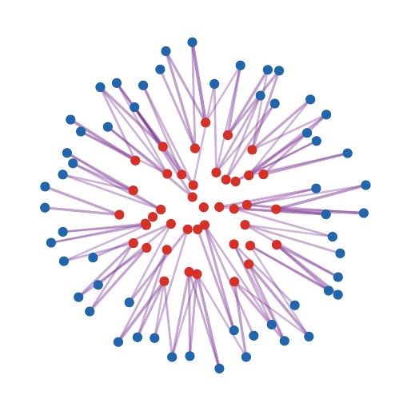
2. Sinkhorn convergence
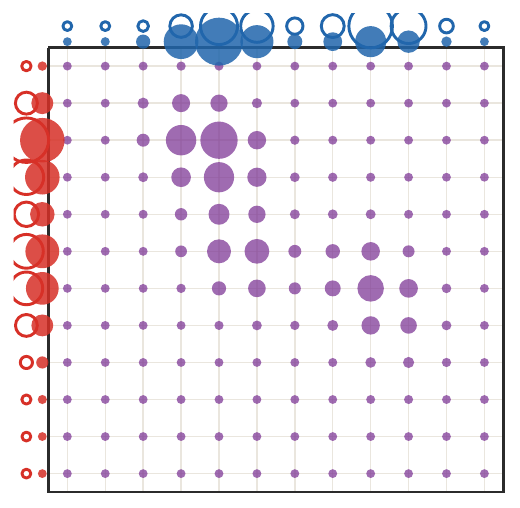
3. Extensions and debiasing

4. Statistics
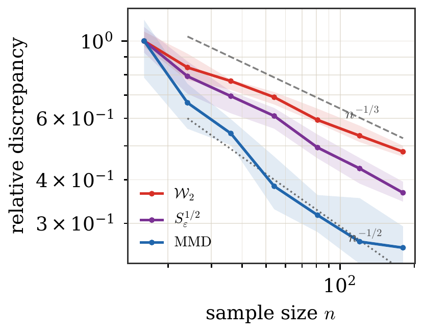
5. Learning

Discrete entropic OT
Entropic regularization. For source histogram a\in\Sigma_n, target histogram b\in\Sigma_m, cost matrix C, and \varepsilon>0, \mathcal L_{C,\varepsilon}(\textcolor{#c7372f}{a},\textcolor{#226db4}{b}) = \min_{\textcolor{#7c5bbd}{P}\in U(\textcolor{#c7372f}{a},\textcolor{#226db4}{b})} \langle C,\textcolor{#7c5bbd}{P}\rangle + \varepsilon\sum_{i,j}\textcolor{#7c5bbd}{P}_{i,j}\big(\log \textcolor{#7c5bbd}{P}_{i,j}-1\big), where U(\textcolor{#c7372f}{a},\textcolor{#226db4}{b})=\{\textcolor{#7c5bbd}{P}\geq 0:\textcolor{#7c5bbd}{P}\mathbb 1_m=\textcolor{#c7372f}{a},\ \textcolor{#7c5bbd}{P}^\top\mathbb 1_n=\textcolor{#226db4}{b}\}.
The entropy term makes the objective strictly convex on the positive orthant.
Relative entropy form
KL form. Using the product reference \textcolor{#c7372f}{a}\otimes \textcolor{#226db4}{b}, the same minimization can be written, up to an additive constant independent of P, as \min_{\textcolor{#7c5bbd}{P}\in U(\textcolor{#c7372f}{a},\textcolor{#226db4}{b})} \langle C,\textcolor{#7c5bbd}{P}\rangle+ \varepsilon\operatorname{KL}(\textcolor{#7c5bbd}{P}\mid \textcolor{#c7372f}{a}\otimes \textcolor{#226db4}{b}), where \operatorname{KL}(\textcolor{#7c5bbd}{P}\mid Q)=\sum_{i,j}\textcolor{#7c5bbd}{P}_{i,j}\log\frac{\textcolor{#7c5bbd}{P}_{i,j}}{Q_{i,j}}-\textcolor{#7c5bbd}{P}_{i,j}+Q_{i,j}.
This is the discrete static Schroedinger problem.
Probabilistic interpretation
Let (\textcolor{#c7372f}{X},\textcolor{#226db4}{Y}) have joint law P and marginals a, b. Then \operatorname{KL}(\textcolor{#7c5bbd}{P}\mid \textcolor{#c7372f}{a}\otimes \textcolor{#226db4}{b}) =I(\textcolor{#c7372f}{X};\textcolor{#226db4}{Y}), the mutual information between X and Y. Equivalently, I(\textcolor{#c7372f}{X};\textcolor{#226db4}{Y}) =\sum_{i,j}\textcolor{#7c5bbd}{P}_{i,j}\log\frac{\textcolor{#7c5bbd}{P}_{i,j}}{\textcolor{#c7372f}{a_i}\textcolor{#226db4}{b_j}} =H(\textcolor{#c7372f}{a})+H(\textcolor{#226db4}{b})-H(\textcolor{#7c5bbd}{P}), \qquad H(\textcolor{#7c5bbd}{P})=-\sum_{i,j}\textcolor{#7c5bbd}{P}_{i,j}\log \textcolor{#7c5bbd}{P}_{i,j}.
Interpretation. Entropic OT minimizes expected transport cost while penalizing dependence between the source and target labels.
Small \varepsilon allows near-deterministic transport. Large \varepsilon pushes toward independence.
Continuous formulation
Continuous entropic OT. For probability measures \alpha, \beta, \mathcal L_{c,\varepsilon}(\textcolor{#c7372f}{\alpha},\textcolor{#226db4}{\beta}) = \inf_{\textcolor{#7c5bbd}{\pi}\in\Gamma(\textcolor{#c7372f}{\alpha},\textcolor{#226db4}{\beta})} \int c(\textcolor{#c7372f}{x},\textcolor{#226db4}{y})\,d\textcolor{#7c5bbd}{\pi}(\textcolor{#c7372f}{x},\textcolor{#226db4}{y}) + \varepsilon\operatorname{KL}(\textcolor{#7c5bbd}{\pi}\mid \textcolor{#c7372f}{\alpha}\otimes\textcolor{#226db4}{\beta}). Here \operatorname{KL}(\textcolor{#7c5bbd}{\pi}\mid q)=\int\log(d\textcolor{#7c5bbd}{\pi}/dq)\,d\textcolor{#7c5bbd}{\pi} if \textcolor{#7c5bbd}{\pi}\ll q, and +\infty otherwise.
Under the usual compactness and lower-semicontinuity assumptions, the value converges to the Kantorovich cost as \varepsilon\to0.
Schrödinger path-space viewpoint
A dynamic version replaces straight-line transport by a controlled Brownian bridge problem. The static coupling is the endpoint law of a path measure.
In the historical “lazy gas” interpretation of Schrödinger’s problem, one observes an unlikely final cloud and asks for the most likely Brownian path ensemble producing it.
Static endpoint reduction. For Brownian reference dynamics, optimizing over path laws with fixed endpoint marginals reduces to an entropic problem over the endpoint coupling.
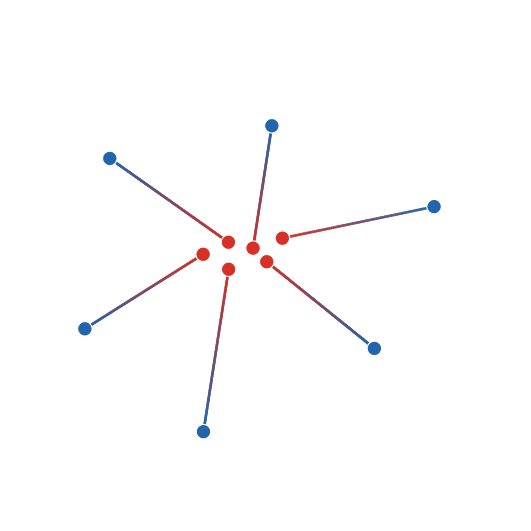
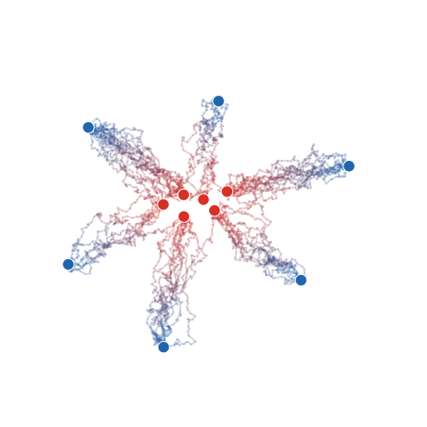
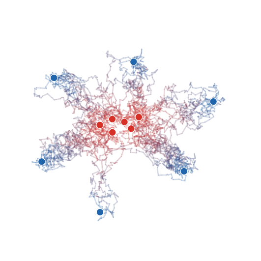
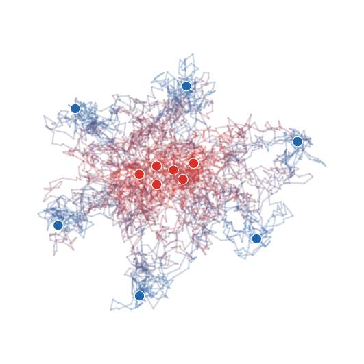
Path-space optimization formula
Let R be a reference Brownian path law and let \textcolor{#7c5bbd}{X_t} be the canonical process. The dynamic Schrödinger problem is \min_{\mathbb P} \ \varepsilon\,\operatorname{KL}(\mathbb P\mid R) \quad\text{s.t.}\quad (\textcolor{#c7372f}{X_0})_\#\mathbb P=\textcolor{#c7372f}{\alpha},\qquad (\textcolor{#226db4}{X_1})_\#\mathbb P=\textcolor{#226db4}{\beta}.
If \textcolor{#7c5bbd}{\pi}=(\textcolor{#c7372f}{X_0},\textcolor{#226db4}{X_1})_\#\mathbb P and R_{01}=(\textcolor{#c7372f}{X_0},\textcolor{#226db4}{X_1})_\#R, then \operatorname{KL}(\mathbb P\mid R) =\operatorname{KL}(\textcolor{#7c5bbd}{\pi}\mid R_{01}) +\int\operatorname{KL}(\mathbb P^{\textcolor{#c7372f}{x},\textcolor{#226db4}{y}}\mid R^{\textcolor{#c7372f}{x},\textcolor{#226db4}{y}})\,d\textcolor{#7c5bbd}{\pi}(\textcolor{#c7372f}{x},\textcolor{#226db4}{y}). Thus the optimizer keeps Brownian bridges conditionally on endpoints and only optimizes the endpoint coupling \pi.
Live panel: Brownian bridge endpoint couplings
The same endpoint coupling can be lifted to path ensembles with increasing Brownian variability.
Impact of \varepsilon
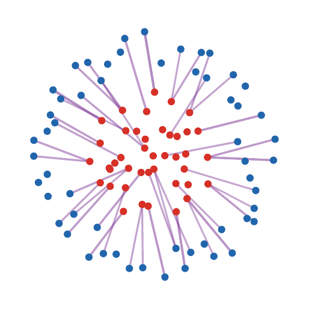
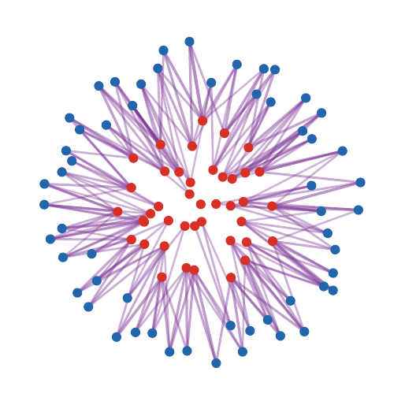
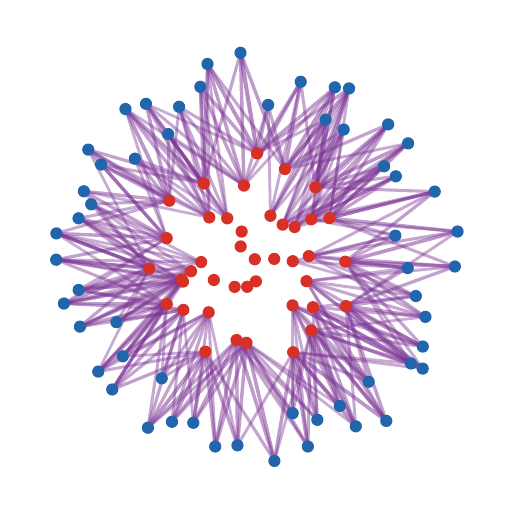
Effect. As \varepsilon increases, the coupling becomes smoother and less sparse. As \varepsilon decreases, it concentrates near the OT support.
Live panel: regularization strength
This panel gives the continuous version of the same sharpening and blurring mechanism.
Interactive: \varepsilon controls the coupling
For K_\varepsilon=e^{-C/\varepsilon}, the optimal coupling has the form \textcolor{#7c5bbd}{P_\varepsilon} = \operatorname{diag}(\textcolor{#c7372f}{u})K_\varepsilon\operatorname{diag}(\textcolor{#226db4}{v}).
Move the slider to see the coupling sharpen or diffuse.
Sinkhorn scaling form
Scaling form. Let K=e^{-C/\varepsilon} with positive entries. The entropic optimizer is unique and satisfies \textcolor{#7c5bbd}{P} = \operatorname{diag}(\textcolor{#c7372f}{u})K\operatorname{diag}(\textcolor{#226db4}{v}), where u\in\mathbb R_+^n and v\in\mathbb R_+^m enforce the two marginals. Equivalently, \textcolor{#c7372f}{u}\odot(K\textcolor{#226db4}{v})=\textcolor{#c7372f}{a}, \qquad \textcolor{#226db4}{v}\odot(K^\top \textcolor{#c7372f}{u})=\textcolor{#226db4}{b}.
This reduces a constrained convex optimization problem to a matrix scaling problem.
Sinkhorn algorithm
Sinkhorn scaling / IPFP / RAS. Input: histograms a, b, kernel K=e^{-C/\varepsilon}.
Output: scaled coupling P with marginals a, b.
- Initialize \textcolor{#226db4}{v}^{(0)}=\mathbb 1_m.
- For \ell=0,1,2,\ldots, update \textcolor{#c7372f}{u}^{(\ell+1)}=\frac{\textcolor{#c7372f}{a}}{K \textcolor{#226db4}{v}^{(\ell)}}, \qquad \textcolor{#226db4}{v}^{(\ell+1)}=\frac{\textcolor{#226db4}{b}}{K^\top \textcolor{#c7372f}{u}^{(\ell+1)}}.
- Return \textcolor{#7c5bbd}{P}^{(\ell)}=\operatorname{diag}(\textcolor{#c7372f}{u}^{(\ell)})K\operatorname{diag}(\textcolor{#226db4}{v}^{(\ell)}).
All divisions are entrywise.
The same matrix-scaling iteration appears under several names: Sinkhorn scaling, IPFP in statistics, and RAS in economics and input-output analysis.
Live panel: Sinkhorn matrix scaling
The row and column normalizations are the algorithmic heart of entropic OT.
Matrix scaling has a long history
Sinkhorn is one member of a broader matrix-scaling family.
Sinkhorn, IPFP, RAS. Given a positive matrix K, the goal is to find diagonal scalings u>0, v>0 such that \operatorname{diag}(\textcolor{#c7372f}{u})K\operatorname{diag}(\textcolor{#226db4}{v})\mathbb 1=\textcolor{#c7372f}{a}, \qquad \operatorname{diag}(\textcolor{#226db4}{v})K^\top\operatorname{diag}(\textcolor{#c7372f}{u})\mathbb 1=\textcolor{#226db4}{b}. The same alternating normalization appears in statistics, economics, input-output tables, and entropy-regularized OT.
The OT contribution is to choose the matrix as the Gibbs kernel K=e^{-C/\varepsilon}.
Yule Udny DAD scaling, 1912
W. Edwards Deming IPFP and survey calibration, 1940
Frederick Stephan IPFP and matrix balancing, 1940
Richard Sinkhorn positive matrix scaling, 1964
Sinkhorn half-steps
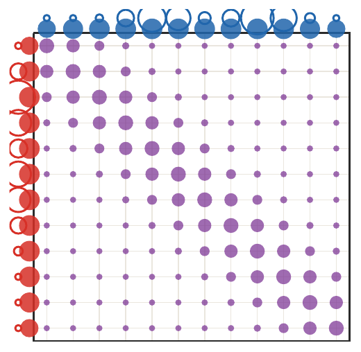
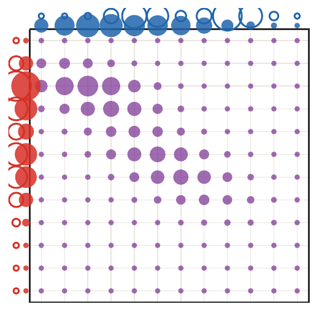
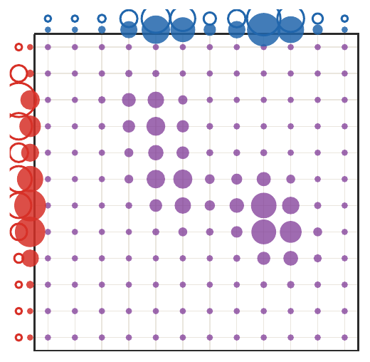

Each half-step fixes one marginal and breaks the other. Alternating the two projections converges to the intersection.
KL projection half-steps
The row and column normalizations are exact KL projections onto affine marginal sets. If \textcolor{#7c5bbd}{P}\geq0, define \mathcal C_{\textcolor{#c7372f}{a}}=\{Q\geq0:Q\mathbf 1_m=\textcolor{#c7372f}{a}\}, \qquad \mathcal C_{\textcolor{#226db4}{b}}=\{Q\geq0:Q^\top\mathbf 1_n=\textcolor{#226db4}{b}\}. Then \operatorname{Proj}^{\mathrm{KL}}_{\mathcal C_{\textcolor{#c7372f}{a}}}(\textcolor{#7c5bbd}{P})_{i,j} = \textcolor{#7c5bbd}{P}_{i,j}\, \frac{\textcolor{#c7372f}{a_i}}{(\textcolor{#7c5bbd}{P}\mathbf 1_m)_i}, \qquad \operatorname{Proj}^{\mathrm{KL}}_{\mathcal C_{\textcolor{#226db4}{b}}}(\textcolor{#7c5bbd}{P})_{i,j} = \textcolor{#7c5bbd}{P}_{i,j}\, \frac{\textcolor{#226db4}{b_j}}{(\textcolor{#7c5bbd}{P}^\top\mathbf 1_n)_j}. Sinkhorn alternates these two explicit projections, starting from the Gibbs kernel K=e^{-C/\varepsilon}.
Live panel: entropy barrier geometry
The path followed by entropic solutions is a smooth central path inside the transport polytope.
Computational structure
For dense kernels, one Sinkhorn iteration costs O(nm).
When Sinkhorn is fast. Sinkhorn is fastest when K has exploitable structure: convolution, separability, low rank, multiscale structure, or GPU-friendly matrix operations.
This explains its role in machine learning: it is differentiable and easy to batch.
Perron-Frobenius viewpoint
Hilbert-metric convergence comes from positive operators, not only from convex analysis. Recall first the classical statement: a positive matrix A>0 has a projective eigenvector A v=\lambda v,\qquad v>0,\quad \lambda>0, and iterations of A converge projectively under Hilbert-metric contraction.
Sinkhorn as a nonlinear eigenproblem. For a strictly positive kernel K>0 and marginals a>0, b>0, define the componentwise scaling map \mathcal T(\textcolor{#226db4}{v}) = \textcolor{#226db4}{b}\oslash \Bigl[ K^\top\bigl(\textcolor{#c7372f}{a}\oslash(K\textcolor{#226db4}{v})\bigr) \Bigr], \qquad \textcolor{#226db4}{v}\in\mathbb R^m_{++}. Sinkhorn is the projective fixed-point iteration \textcolor{#226db4}{v^{(\ell+1)}}=\mathcal T(\textcolor{#226db4}{v^{(\ell)}}),\qquad \textcolor{#c7372f}{u^{(\ell+1)}}=\textcolor{#c7372f}{a}\oslash(K\textcolor{#226db4}{v^{(\ell)}}), and a solution satisfies \mathcal T(\textcolor{#226db4}{v})=\textcolor{#226db4}{v},\qquad \textcolor{#7c5bbd}{P}=\operatorname{diag}(\textcolor{#c7372f}{u})K\operatorname{diag}(\textcolor{#226db4}{v}),\qquad \textcolor{#7c5bbd}{P}\mathbf 1=\textcolor{#c7372f}{a},\quad \textcolor{#7c5bbd}{P}^\top\mathbf 1=\textcolor{#226db4}{b}.
The two Perron-Frobenius structural properties are explicit: \mathcal T(\lambda v)=\lambda \mathcal T(v)\quad(\lambda>0), \qquad v\leq w \Longrightarrow \mathcal T(v)\leq \mathcal T(w). Thus the fixed point is naturally a projective object, exactly as in Perron-Frobenius theory. This is the bridge to Rothblum-type matrix-scaling analyses and to the Hilbert-metric proof later in this deck.
Other convex regularizers
General regularized OT. Entropy can be replaced by a convex divergence: \min_{\textcolor{#7c5bbd}{P}\in U(\textcolor{#c7372f}{a},\textcolor{#226db4}{b})} \langle C,\textcolor{#7c5bbd}{P}\rangle+ \varepsilon D_\varphi(\textcolor{#7c5bbd}{P}\mid \textcolor{#c7372f}{a}\otimes \textcolor{#226db4}{b}). For Q=\textcolor{#c7372f}{a}\otimes \textcolor{#226db4}{b}, this means D_\varphi(\textcolor{#7c5bbd}{P}\mid Q)=\sum_{i,j}Q_{i,j}\, \varphi\!\left(\frac{\textcolor{#7c5bbd}{P}_{i,j}}{Q_{i,j}}\right).
Different choices of \varphi change both the smoothness and sparsity of the optimal coupling.
Live panel: regularized OT beyond KL
Changing the divergence changes the dual update and the sparsity of the plan.
Regularizer profiles
Each convex regularizer changes the scalar penalty applied to the density ratio \textcolor{#7c5bbd}{P_{i,j}}/(\textcolor{#c7372f}{a_i}\textcolor{#226db4}{b_j}).
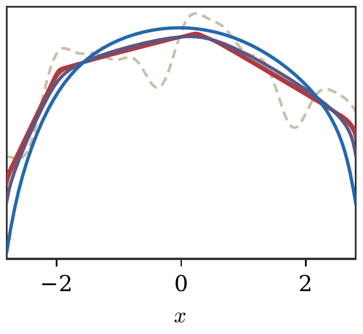
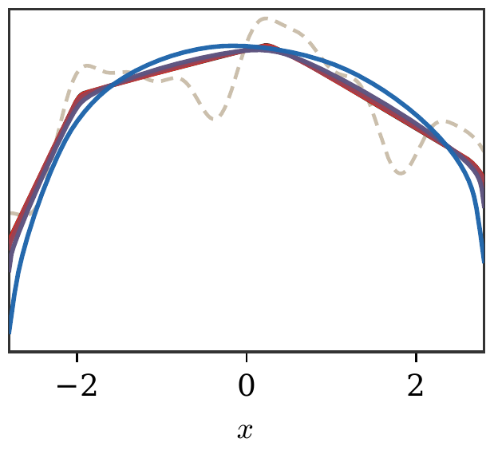
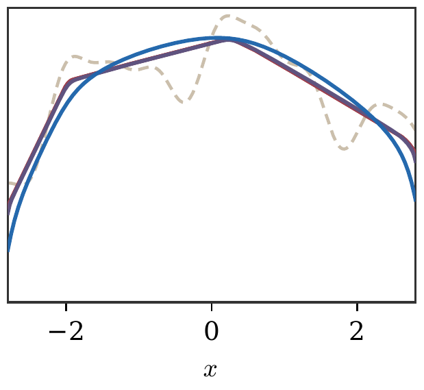
Interactive: entropy spreads mass
Entropy replaces a sparse assignment by a Gibbs-weighted cloud around low-cost pairs. Increasing \varepsilon therefore thickens the plan and improves smoothness.
The panel shows the same marginals while only the regularization strength changes.
Roadmap: convergence analysis
1. Entropic OT
2. Sinkhorn convergence
3. Extensions and debiasing
4. Statistics
5. Learning
Bregman projection view
Iterative KL projections. Sinkhorn is alternating Bregman projection for the KL divergence onto the affine marginal constraint sets \mathcal C_{\textcolor{#c7372f}{a}}=\{\textcolor{#7c5bbd}{P}:\textcolor{#7c5bbd}{P}\mathbb 1_m=\textcolor{#c7372f}{a}\}, \qquad \mathcal C_{\textcolor{#226db4}{b}}=\{\textcolor{#7c5bbd}{P}:\textcolor{#7c5bbd}{P}^\top\mathbb 1_n=\textcolor{#226db4}{b}\}.
The initial matrix is the Gibbs kernel K=e^{-C/\varepsilon}, and each projection is a multiplicative rescaling.
Dual problem
Entropic dual. The discrete entropic problem has dual \max_{f,g} \langle f,\textcolor{#c7372f}{a}\rangle+\langle g,\textcolor{#226db4}{b}\rangle - \varepsilon\sum_{i,j}\textcolor{#c7372f}{a_i}\textcolor{#226db4}{b_j} \left(e^{(f_i+g_j-C_{i,j})/\varepsilon}-1\right). At optimality, \textcolor{#7c5bbd}{P}_{i,j}=\textcolor{#c7372f}{a_i}\textcolor{#226db4}{b_j} e^{(f_i+g_j-C_{i,j})/\varepsilon}.
With the convention \textcolor{#7c5bbd}{P}=\operatorname{diag}(\textcolor{#c7372f}{u})K\operatorname{diag}(\textcolor{#226db4}{v}), one has \textcolor{#c7372f}{u_i}=\textcolor{#c7372f}{a_i} e^{f_i/\varepsilon} and \textcolor{#226db4}{v_j}=\textcolor{#226db4}{b_j} e^{g_j/\varepsilon}.
Soft c-transforms
Soft c-transform. For a function f on the source support, f^{c,\varepsilon}(\textcolor{#226db4}{y_j}) =-\varepsilon\log\sum_i a_i \exp\left(\frac{f_i-C_{i,j}}{\varepsilon}\right).
Dual block maximization alternates soft transforms: g\leftarrow f^{c,\varepsilon}, \qquad f\leftarrow g^{\bar c,\varepsilon}.
Live panel: soft c-transforms
Soft transforms replace hard envelopes by log-sum-exp envelopes.
Stabilized log-domain Sinkhorn
For small \varepsilon, K=e^{-C/\varepsilon} can underflow. Stabilized implementations store log-scalings, equivalently dual potentials.
Stabilized log-domain updates. Instead of scaling vectors u,v, store potentials f_i=\varepsilon\log(\textcolor{#c7372f}{u_i}/\textcolor{#c7372f}{a_i}), \qquad g_j=\varepsilon\log(\textcolor{#226db4}{v_j}/\textcolor{#226db4}{b_j}). The updates are soft c-transforms computed with log-sum-exp operations.
This keeps the Sinkhorn iteration stable when \varepsilon is small and the Gibbs kernel has entries below machine precision.
Log-domain update steps
Stabilized Sinkhorn iteration. Input: histograms a, b, cost matrix C, regularization \varepsilon>0.
Output: stabilized dual potentials f,g.
- Initialize f=0.
- Repeat until convergence: \begin{aligned} g_j \leftarrow -\varepsilon\log\sum_i \textcolor{#c7372f}{a_i} \exp\!\left(\frac{f_i-C_{i,j}}{\varepsilon}\right),\\ f_i \leftarrow -\varepsilon\log\sum_j \textcolor{#226db4}{b_j} \exp\!\left(\frac{g_j-C_{i,j}}{\varepsilon}\right). \end{aligned}
- Recover \textcolor{#7c5bbd}{P}_{i,j}=\textcolor{#c7372f}{a_i}\textcolor{#226db4}{b_j} \exp((f_i+g_j-C_{i,j})/\varepsilon).
This is numerically stable because it uses log-sum-exp operations.
Dual potentials and \varepsilon
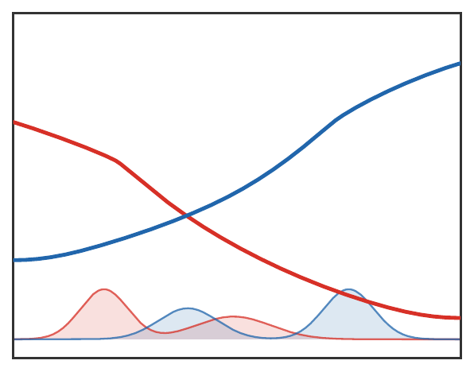
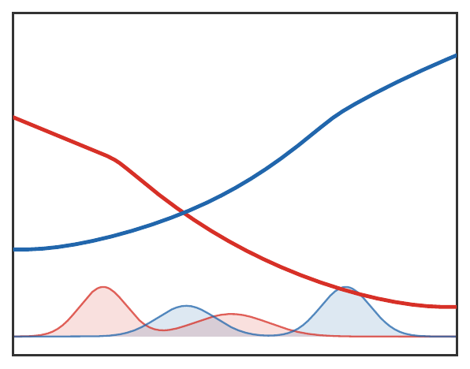
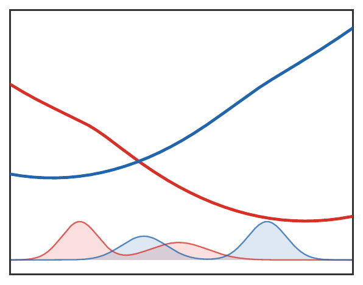
The potentials approach unregularized Kantorovich potentials as \varepsilon\to 0 and become smoother as \varepsilon grows.
Hilbert projective metric
Hilbert metric. For positive vectors u,v, d_H(u,v)=\log\max_i\frac{u_i}{v_i} - \log\min_i\frac{u_i}{v_i}.
It ignores global scaling. This is exactly what is needed because Sinkhorn scalings are unique only up to reciprocal multiplication.
Linear contraction mechanism
Positive maps contract projectively. If A is a positive matrix, Birkhoff’s contraction theorem states d_H(Au,Av)\leq \tanh\!\left(\frac{\Delta(A)}4\right)d_H(u,v), \qquad \Delta(A)=\sup_{u,v>0}d_H(Au,Av). Positive linear maps are therefore nonexpansive in Hilbert metric, and strictly positive matrices contract when their projective diameter is finite.
Applied to K and K^\top, this yields linear convergence of Sinkhorn in a projective metric.
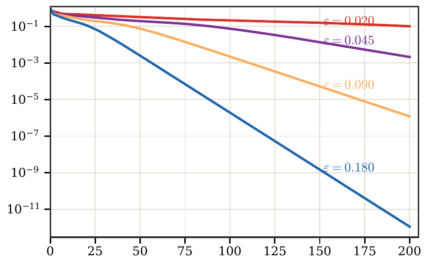
Monotone and variation viewpoints
The log-domain map f\mapsto (f^{c,\varepsilon})^{\bar c,\varepsilon} is order-preserving and commutes with additive constants.
Topical-map intuition. Order preservation plus translation invariance implies nonexpansiveness for the variation seminorm \|f\|_{\mathrm{var}}=\max_i f_i-\min_i f_i.
This gives a robust way to read Sinkhorn as a monotone fixed-point iteration.
Geometry of the regularized path
Entropy acts like a barrier inside the transport polytope. The solution follows a central path as \varepsilon decreases.
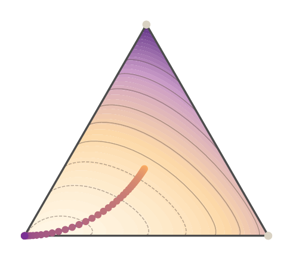
Roadmap: extensions and debiasing
1. Entropic OT
2. Sinkhorn convergence
3. Extensions and debiasing
4. Statistics
5. Learning
Unbalanced entropic OT
KL-unbalanced formulation. Instead of enforcing exact marginals, penalize deviations: \min_{\textcolor{#7c5bbd}{P}\geq 0} \langle C,\textcolor{#7c5bbd}{P}\rangle+ \varepsilon\operatorname{KL}(\textcolor{#7c5bbd}{P}\mid \textcolor{#c7372f}{a}\otimes \textcolor{#226db4}{b}) +\tau\operatorname{KL}(\textcolor{#7c5bbd}{P}\mathbb 1\mid \textcolor{#c7372f}{a}) +\tau\operatorname{KL}(\textcolor{#7c5bbd}{P}^\top\mathbb 1\mid \textcolor{#226db4}{b}).
This allows mass creation and destruction when matching every unit of mass is unnatural. The associated dynamic viewpoint is geodesic unbalanced OT: particles can move while their mass is also allowed to grow or decay.
Live panel: unbalanced entropic transport
Relaxing marginal constraints changes transport into a combined displacement and mass-variation problem.
Generalized Sinkhorn for unbalanced OT
For the KL marginal penalty, the updates become damped: \textcolor{#c7372f}{u}\leftarrow \left(\frac{\textcolor{#c7372f}{a}}{K \textcolor{#226db4}{v}}\right)^{\tau/(\tau+\varepsilon)}, \qquad \textcolor{#226db4}{v}\leftarrow \left(\frac{\textcolor{#226db4}{b}}{K^\top \textcolor{#c7372f}{u}}\right)^{\tau/(\tau+\varepsilon)}.
Balanced limit. As \tau\to +\infty, the exponent tends to one and one recovers ordinary Sinkhorn scaling.
Marginal penalties matter
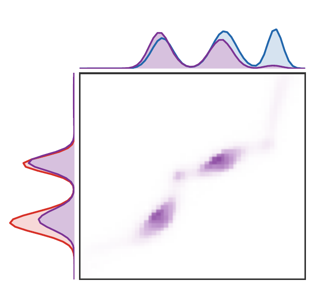
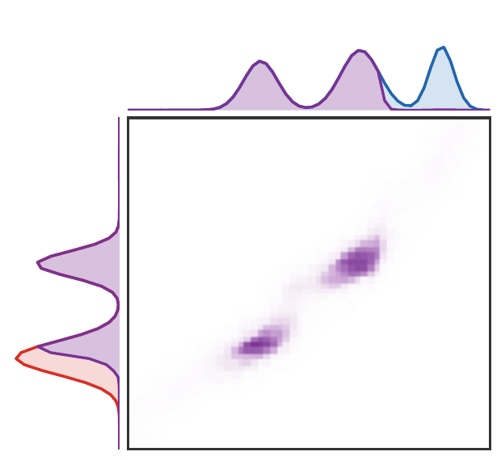
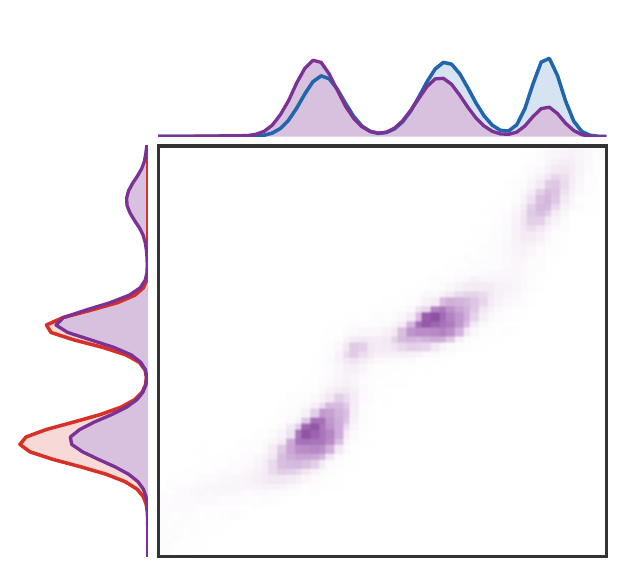
Different divergences encode different ways of ignoring or creating mass.
Balanced versus unbalanced interpolation
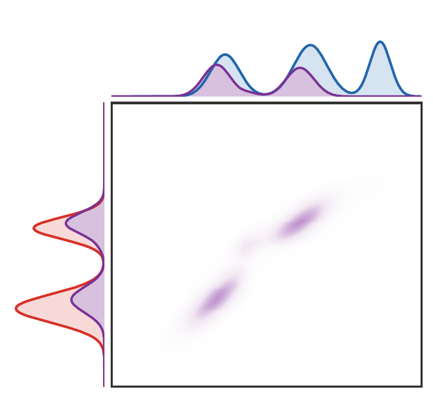
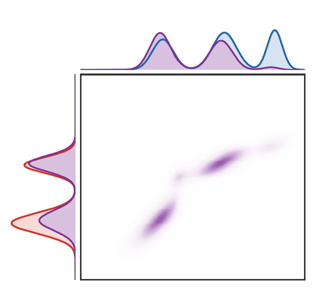
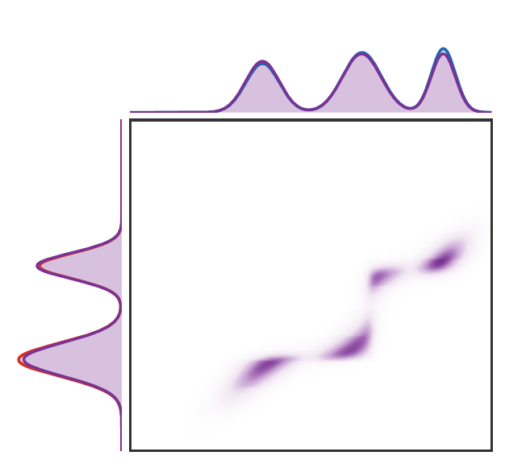
Small marginal penalty favors local mass variation; large penalty approaches balanced OT.
Entropic barycenters
Entropic Wasserstein barycenter. Given input measures (\beta_s)_s and weights (\lambda_s)_s, compute \min_{\textcolor{#c7372f}{\alpha}} \sum_s \lambda_s\mathcal L_{c,\varepsilon}(\textcolor{#c7372f}{\alpha},\textcolor{#226db4}{\beta_s}).
Sinkhorn-like updates alternate between transport couplings and the barycenter weights.
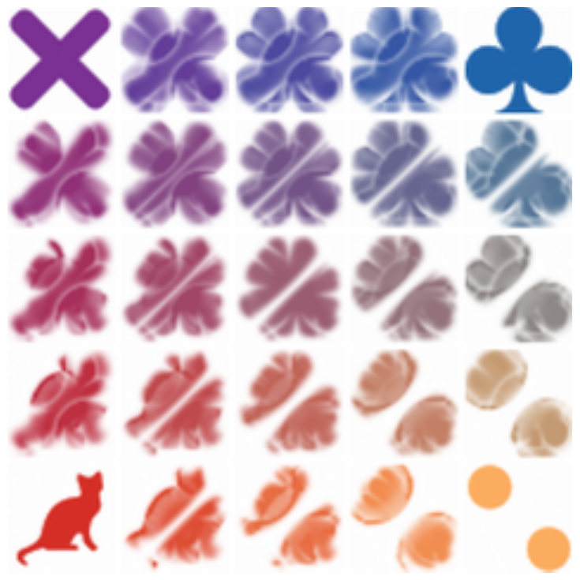
Kernel norms and MMD
MMD. For a reproducing kernel Hilbert space \mathcal H, \operatorname{MMD}_k(\textcolor{#c7372f}{\alpha},\textcolor{#226db4}{\beta}) = \sup_{\|f\|_\mathcal H\leq 1} \int f\,d(\textcolor{#c7372f}{\alpha}-\textcolor{#226db4}{\beta}).
MMD is not an OT distance, but it is another differentiable discrepancy with favorable sample complexity.
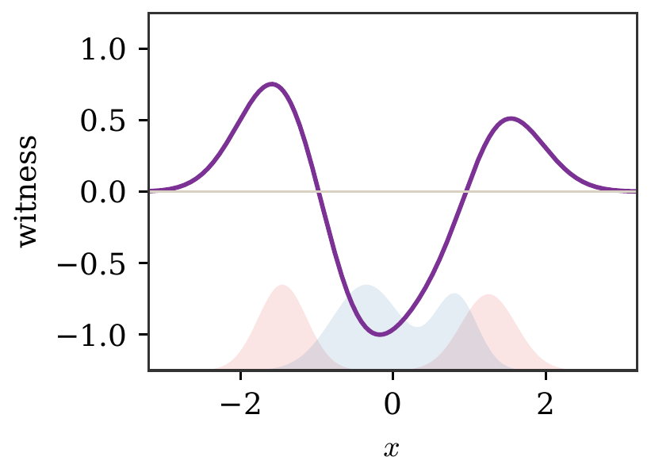
Sinkhorn divergence
Debiased Sinkhorn loss. The Sinkhorn divergence is S_\varepsilon(\textcolor{#c7372f}{\alpha},\textcolor{#226db4}{\beta}) = \mathcal L_{c,\varepsilon}(\textcolor{#c7372f}{\alpha},\textcolor{#226db4}{\beta}) -\frac12\mathcal L_{c,\varepsilon}(\textcolor{#c7372f}{\alpha},\textcolor{#c7372f}{\alpha}) -\frac12\mathcal L_{c,\varepsilon}(\textcolor{#226db4}{\beta},\textcolor{#226db4}{\beta}).
The correction removes the entropic self-bias: S_\varepsilon(\textcolor{#c7372f}{\alpha},\textcolor{#c7372f}{\alpha})=0, while preserving differentiability.
Live panel: 2D Sinkhorn debiasing
Debiasing counteracts the self-attraction induced by entropy, so fitted particles cover the target more evenly.
Debiasing effect
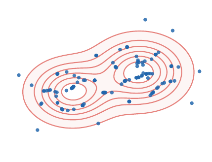
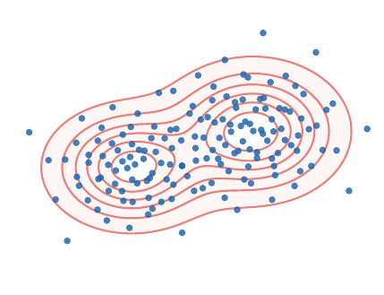
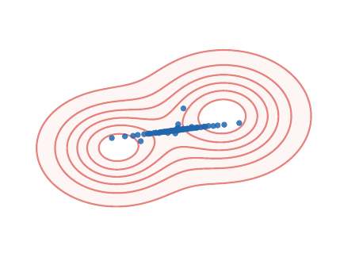
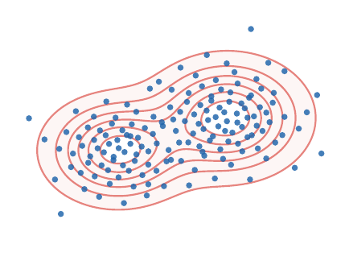
Positivity and limits
Sinkhorn divergence behavior. For many standard costs, S_\varepsilon is nonnegative and separates probability measures. Moreover, S_\varepsilon(\textcolor{#c7372f}{\alpha},\textcolor{#226db4}{\beta})\to W_c(\textcolor{#c7372f}{\alpha},\textcolor{#226db4}{\beta}) \quad\text{as }\varepsilon\to 0, while large \varepsilon connects to kernel norms and MMD-type limits.
This gives a continuum between OT geometry and kernel discrepancies.
Roadmap: statistical behavior
1. Entropic OT
2. Sinkhorn convergence
3. Extensions and debiasing
4. Statistics
5. Learning
Curse of dimensionality for exact OT
For empirical measures \hat\alpha_n, exact OT suffers from dimension-dependent rates: \mathbb E\, W_p(\textcolor{#c7372f}{\hat\alpha_n},\textcolor{#c7372f}{\alpha}) \asymp n^{-1/d} in the high-dimensional absolutely continuous regime, up to known endpoint variations.
Message. Exact OT is geometrically rich but statistically expensive in high dimension.
Fixed \varepsilon changes the statistics
At fixed \varepsilon>0, entropic OT and Sinkhorn divergences are smoother functionals of the empirical measure.
Parametric behavior at fixed \varepsilon. Under regularity assumptions, empirical Sinkhorn divergences admit n^{-1/2}-type fluctuations, with constants depending on \varepsilon.
The price is bias: fixed \varepsilon does not equal exact OT.
Reference sample-complexity rates
For empirical laws \hat\alpha_n,\hat\beta_n in dimension d, the reference comparison is \mathbb E\left|W_p(\hat\alpha_n,\hat\beta_n)-W_p(\alpha,\beta)\right| =O(n^{-1/d}) for exact OT in the high-dimensional regime, while for fixed \varepsilon>0, \mathbb E\left|\mathcal L_{c,\varepsilon}(\hat\alpha_n,\hat\beta_n) -\mathcal L_{c,\varepsilon}(\alpha,\beta)\right| =O(n^{-1/2}) under the usual smoothness and nondegeneracy assumptions.
For Sinkhorn divergences, the same parametric behavior holds at fixed \varepsilon, but constants deteriorate as \varepsilon\to0.
Bias-variance tradeoff
Small \varepsilon reduces bias but makes computation and statistics harder. Large \varepsilon smooths the problem but changes the geometry.

Small-\varepsilon bias expansion
For quadratic cost and smooth positive densities, the entropic value has a singular small-\varepsilon bias: \mathcal L_{2,\varepsilon}(\alpha,\beta)-W_2^2(\alpha,\beta) =d\varepsilon\log\sqrt{2\pi\varepsilon} +\varepsilon\big(H(\alpha)+H(\beta)\big)+o(\varepsilon).
Debiasing cancels the first-order endpoint terms. Along the displacement interpolation \rho_t, S_\varepsilon(\alpha,\beta)-W_2^2(\alpha,\beta) = \varepsilon^2\left( I(\alpha,\beta)-\frac{I(\alpha,\alpha)+I(\beta,\beta)}2 \right)+o(\varepsilon^2), where I(\alpha,\beta)=\int_0^1\int\|\nabla\log\rho_t(x)\|^2\rho_t(x)\,dx\,dt.
Entropy estimates exact OT through three errors
For empirical data, the approximation to exact OT contains:
- sampling error,
- regularization bias,
- numerical optimization error.
Practical rule. Choose \varepsilon large enough for stable estimation and fast Sinkhorn iterations, but small enough to retain the desired OT geometry.
Smoothness and high dimension
If the inputs have smooth densities, smoothing or regularization can exploit this smoothness. In high dimension, generic smoothing is itself costly.
This is one reason entropic OT is attractive in practice: it provides a differentiable approximation with scalable linear-algebra structure.
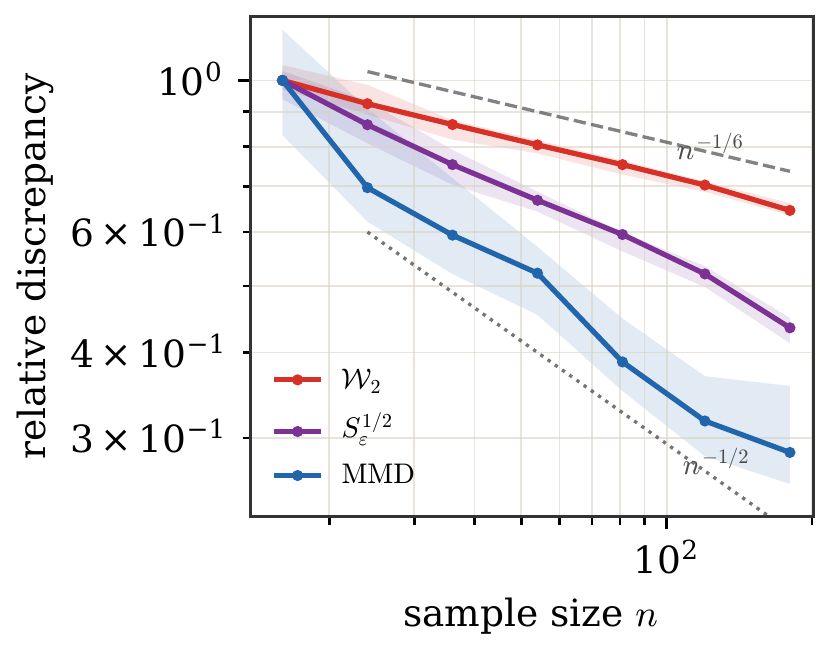
Roadmap: learning with Sinkhorn
1. Entropic OT
2. Sinkhorn convergence
3. Extensions and debiasing
4. Statistics
5. Learning
Generative model fitting
Sinkhorn training loss. For a generator g_\theta and latent law \zeta, train with \min_\theta S_\varepsilon\big(\textcolor{#c7372f}{(g_\theta)_\#\zeta},\textcolor{#226db4}{\beta}\big).
The differentiability of the entropic problem makes this compatible with automatic differentiation. Historically, the same training loop was used in Wasserstein, Sinkhorn, and MMD generative models, including progressive growing GAN experiments.
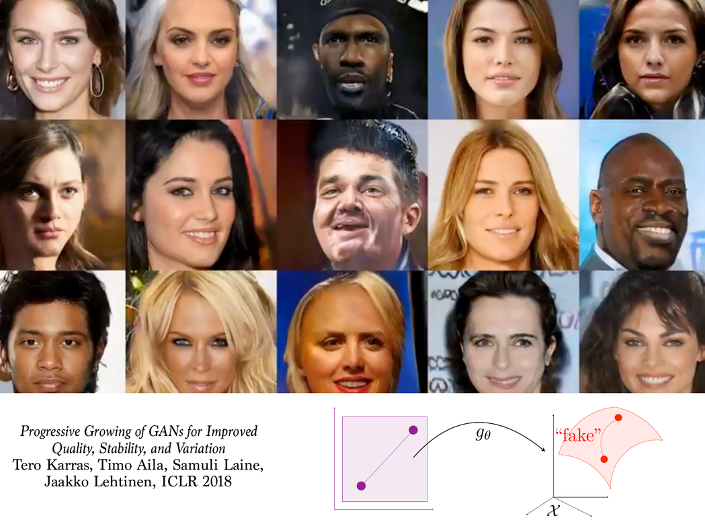
Discriminator versus generator viewpoint
Kantorovich dual potentials play the role of smooth discriminators: \nabla_\theta S_\varepsilon(\textcolor{#c7372f}{(g_\theta)_\#\zeta},\textcolor{#226db4}{\beta}) can be computed by differentiating through the generator and using the optimal dual potentials or coupling.

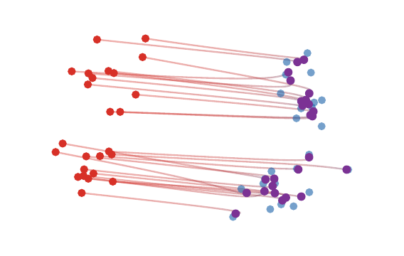

Automatic differentiation
Envelope principle. Once the optimal dual variables are computed, the derivative of the regularized transport value with respect to the cost is the optimal coupling: \frac{\partial \mathcal L_{C,\varepsilon}}{\partial C_{i,j}}=\textcolor{#7c5bbd}{P_{i,j}^\star}. With respect to weights, the derivatives are the optimal dual potentials, up to the usual additive normalization.
This is the basic reason Sinkhorn losses integrate well into differentiable learning pipelines.
Training architecture
A typical mini-batch pipeline is:
- sample latent variables and data,
- build the cost matrix,
- run Sinkhorn iterations,
- backpropagate the Sinkhorn loss through the generator.
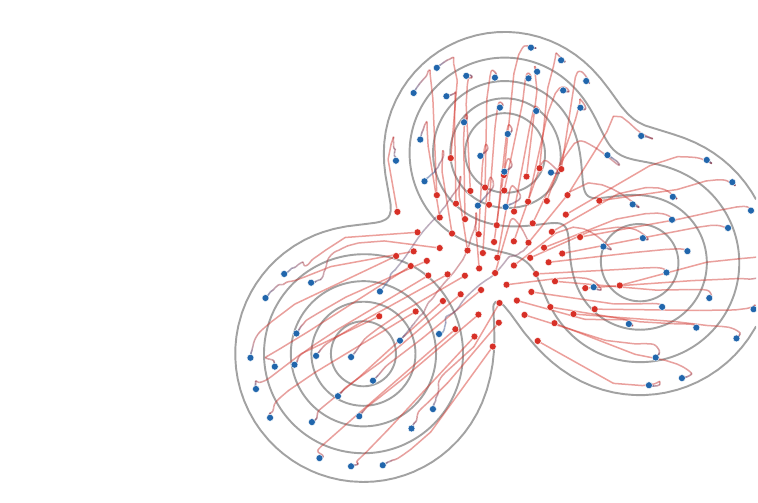
Open problems and design tensions
Main tension. Entropic OT is an approximation, a numerical method, a statistical smoother, and a differentiable loss. The best \varepsilon depends on the role.
Open directions include scalable approximations in high dimension, adaptive regularization, metric learning for costs, and robust generative training.
Summary
Entropysmooths OT plans
Sinkhornsolves by scaling
Debiasingturns costs into losses
Takeaway. Entropic regularization transforms optimal transport into a scalable differentiable primitive for optimization, statistics, and learning.
Next deck
The next presentation focuses on duality, semi-discrete OT, c-transforms, and Wasserstein-1 type dual norms.

OT4ML - Entropic Regularization